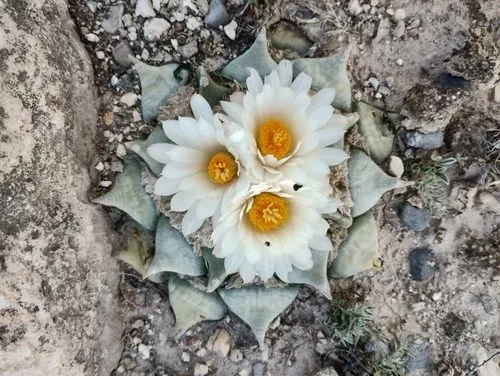

多肉植物 · 植物界
岩牡丹 Ariocarpus retusus

仙人掌科岩牡丹属多年生肉质植物，疣突三角形、层叠如莲花，花白色至粉色，是墨西哥珍稀仙人掌，CITES 附录Ⅰ物种。
- 分类
- 门被子植物门纲木兰纲目石竹目科仙人掌科属岩牡丹属
- 栖息环境
- 原产墨西哥中部与北部石灰岩荒漠，喜光耐旱
- 地理分布
- 原产墨西哥中部、北部石灰岩荒漠地区
- 保护级别
- CITES 附录Ⅰ；IUCN 暂无评估；野外种群受采集威胁
物种志
岩牡丹为仙人掌科岩牡丹属多年生肉质植物，具粗壮肉质根，球体扁平，高约五至十厘米，直径十至二十厘米。疣突三角形，肥厚，螺旋状排列并向外伸展，表面灰绿色至蓝绿色，无刺或刺极短。花生于球体中心，花冠漏斗状，白色至淡粉色，花径约四厘米，花期秋季；浆果长圆形，成熟时白色，种子黑色。
岩牡丹原产墨西哥中部和北部的石灰岩荒漠，是岩牡丹属的代表种。它喜光、耐旱，夏季高温时需适度遮阴；适宜疏松透气、排水良好的石灰质颗粒基质，忌积水和闷热。疣突层叠如莲花，形态古朴，是仙人掌收藏中的经典种类；生长极慢，野外种群因采集和生境破坏而受威胁，被列入 CITES 附录Ⅰ。繁殖以播种为主。
形态与习性
- 株型扁平，疣突三角形层叠
- 球径直径 10–20 cm，高 5–10 cm
- 花期秋季，花白色至淡粉色
- 光照喜光，夏季适度遮阴
- 水分耐旱，忌积水
- 土壤石灰质颗粒基质
- 主要用途珍稀仙人掌收藏与栽培
趣味知识
- 岩牡丹的疣突三角形、层层叠放，像一朵开在石头上的莲花。
- 它几乎没有刺，靠灰绿色的疣突进行光合作用并储存水分。
- 岩牡丹生长极慢，野生植株常被非法采集，已列入 CITES 附录Ⅰ。